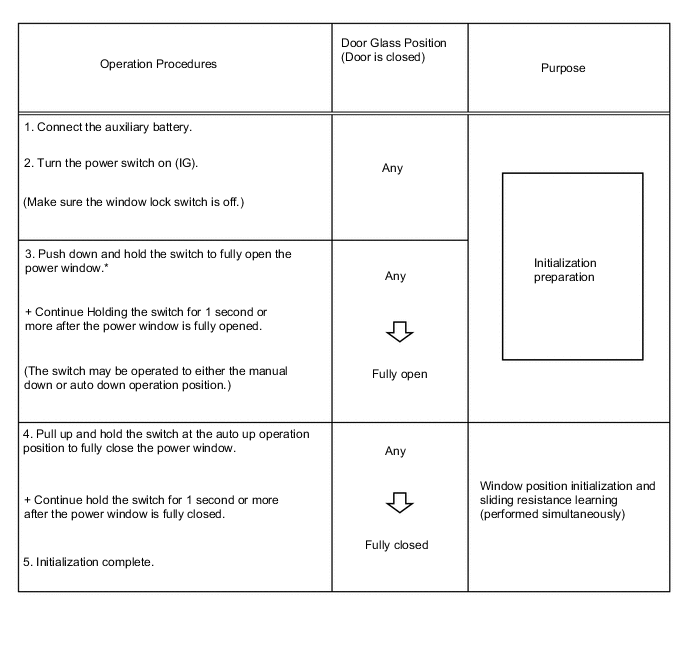
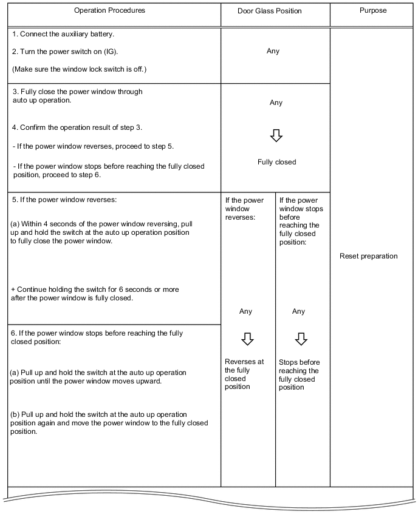
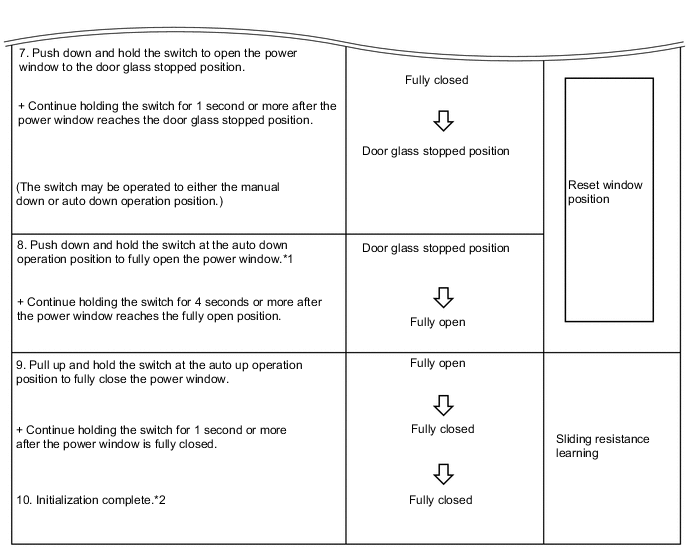
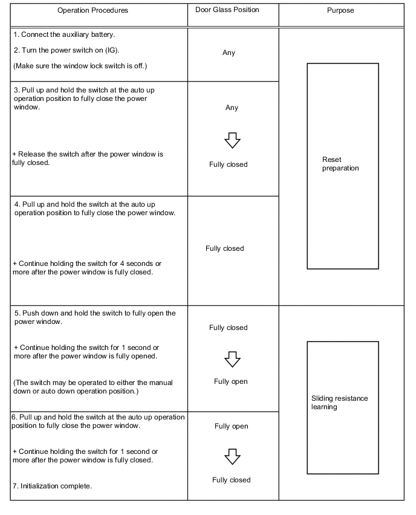

INITIALIZE POWER WINDOW CONTROL SYSTEM (ALL DOORS)
Note
When a door window regulator sub-assembly, power window regulator motor assembly, door glass or door glass run is reinstalled or replaced, the power window control system must be initialized. Functions such as the auto up and down function, jam protection function catch protection function, remote control function, key-linked function, wireless transmitter-linked function*, key-off operation function and window open warning function will not operate if initialization is not performed.
*: w/o Canister Pump Module
When a power window regulator motor assembly is replaced, DTC B2313 is stored. Clear the DTC after initialization.
When performing initialization, do not perform any other procedures.
When performing initialization, use the power window switch of each door to initialize each power window.
If initialization cannot be completed properly, the LIN communication system may be malfunctioning.
Make sure to park the vehicle and turn off all electrical systems before performing initialization. Initialization will be canceled if the vehicle is driven during initialization.
Make sure not to hit, strike or vibrate the door glass during initialization because the vehicle is learning the sliding resistance of the door glass.
Make sure not to turn the power switch off during initialization.
Tech Tips
If the auxiliary battery has been replaced, it is not necessary to initialize the power window regulator motor assemblies.
Perform initialization according to the table below.
| Condition of Power Window | Proceed to |
|---|---|
| Initialization method when a power window regulator motor assembly has been replaced with a new one. | Procedure A |
Tech Tips Use this procedure if a power window regulator motor assembly is being reused. |
Procedure B |
| Initialization method for when the power window unexpectedly operates in reverse or stops due to a change in the sliding resistance after a fitting adjustment is made. | Procedure C |
Procedure A
Perform window position initialization (fully closed, fully open) and sliding resistance learning.

Tech Tips
*: Even if the door glass is in the fully open position before performing step 3, push down and hold the switch for 1 second or more.
Procedure B
Reset the power window position, perform window position initialization (fully closed, fully opened) and sliding resistance learning.


Tech Tips
*1: After performing step 7, release the switch, and then perform an auto down operation.
*2: After completing initialization, check that the power window can be fully closed using an auto up operation.
If initialization cannot be completed properly, the LIN communication system may be malfunctioning.
Procedure C
Perform sliding resistance learning.

Tech Tips
If the jam protection function or catch protection function continues to operate even after performing steps 4, 5 and 6, perform the procedure again from step 3.